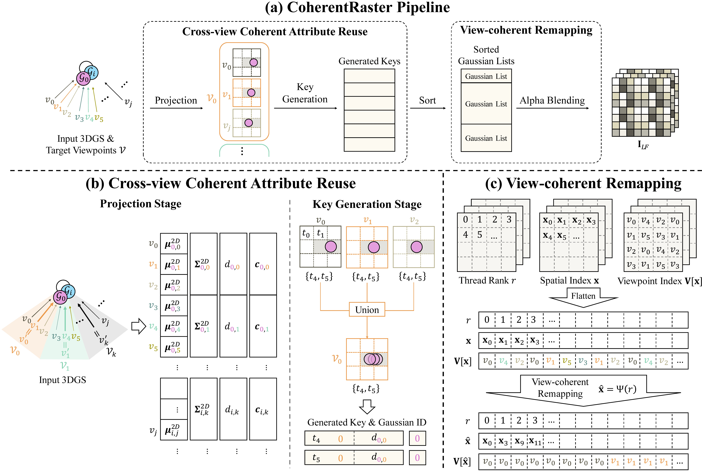
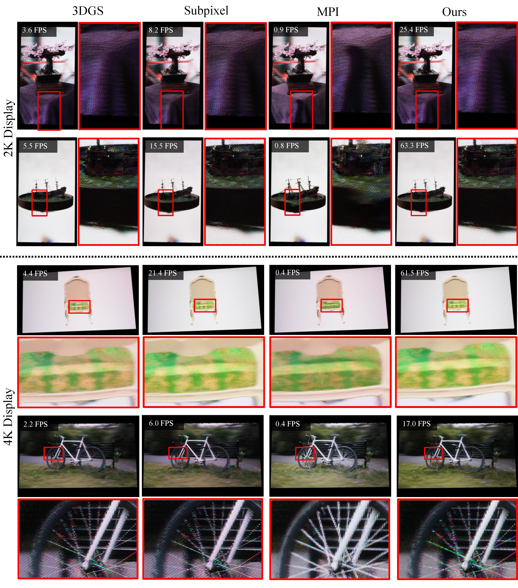

Light field displays (LFDs) require rendering an interlaced image that encodes many view-dependent observations. This multi-view requirement introduces substantial computational overhead, making real-time rendering difficult to achieve. While 3D Gaussian Splatting (3DGS) is efficient for single-view rendering on 2D displays, directly extending it to LFDs is computationally expensive. Moreover, prior accelerations either suffer from GPU inefficiency under spatially incoherent subpixel layouts or rely on computationally heavy multi-plane intermediates. In this paper, we propose CoherentRaster, a 3DGS-based light field rendering framework that performs subpixel-level rasterization. Our method employs Cross-view Coherent Attribute Reuse to eliminate redundant computation across neighboring viewpoints and applies View-coherent Remapping to restore warp-level memory efficiency degraded by the interlaced subpixel layout. Together, CoherentRaster provides an efficient pipeline for real-time, high-quality light field synthesis on consumer-grade hardware.

Overview of the CoherentRaster pipeline. Cross-view Coherent Attribute Reuse removes redundant per-view computation, and View-coherent Remapping restores coalesced memory access during alpha blending.
CoherentRaster adapts the 3D Gaussian representation to the subpixel-level layout of light field displays. Instead of rendering a full RGB image per viewpoint and then sampling subpixels, it directly determines, for every subpixel, which Gaussians contribute and with what color. Two strategies address the bottlenecks of this subpixel-level pipeline.
Neighboring viewpoints observe nearly the same scene content. We group adjacent views into clusters and compute attributes which vary smoothly with viewpoints — 2D covariance, depth, and SH-based color — once at each cluster's representative view, reusing them across the cluster. Only the 2D mean, which shifts noticeably with viewpoint, is computed per view. This sharply reduces redundant per-view projection, key-generation, and sorting work.
Because the lens geometry of LFDs interleaves viewpoints across the LF image, spatially adjacent subpixels often belong to different views, breaking the memory coalescing that GPUs rely on. We reorder the thread-to-subpixel mapping by viewpoint index through a precomputed lookup table, so threads within a warp access the same or nearby Gaussian lists, restoring coalesced memory access during alpha blending.
On an NVIDIA RTX 5090, CoherentRaster reaches up to 23 FPS for 4K (3840×2160) interlaced outputs of real-world scenes with 71 viewpoints, and is the first method to enable real-time rendering beyond 2K resolution for real-world 3D scenes. It achieves up to a 7.6× speedup over a full-frame 3DGS pipeline while preserving high-fidelity rendering.

Photographs captured directly from the light field display. CoherentRaster matches the full-frame baseline while running at real-time frame rates.
| Method | Synthetic Blender | Mip-NeRF 360 | ||
|---|---|---|---|---|
| 2K FPS | 4K FPS | 2K FPS | 4K FPS | |
| Full-Frame 3DGS | 5.8 | 4.1 | 3.9 | 2.1 |
| Full-Frame 3DGS (batch=36) | 20 | 13 | 7.4 | 4.0 |
| Subpixel-3DGS | 28 | 19 | 11 | 5.7 |
| MPI | 0.8 | 0.4 | 0.8 | 0.4 |
| Ours | 88 | 56 | 30 | 16 |
Rendering speed (FPS) against baselines on an RTX 5090.
@misc{sim2026coherentrasterefficient3dgaussian,
title={CoherentRaster: Efficient 3D Gaussian Splatting for Light Field Displays},
author={Gyujin Sim and Seungjoo Shin and Hosung Jeon and Gwangsoon Lee and Hyon-Gon Choo and Sunghyun Cho},
year={2026},
eprint={2605.04509},
archivePrefix={arXiv},
primaryClass={cs.GR},
url={https://arxiv.org/abs/2605.04509},
}